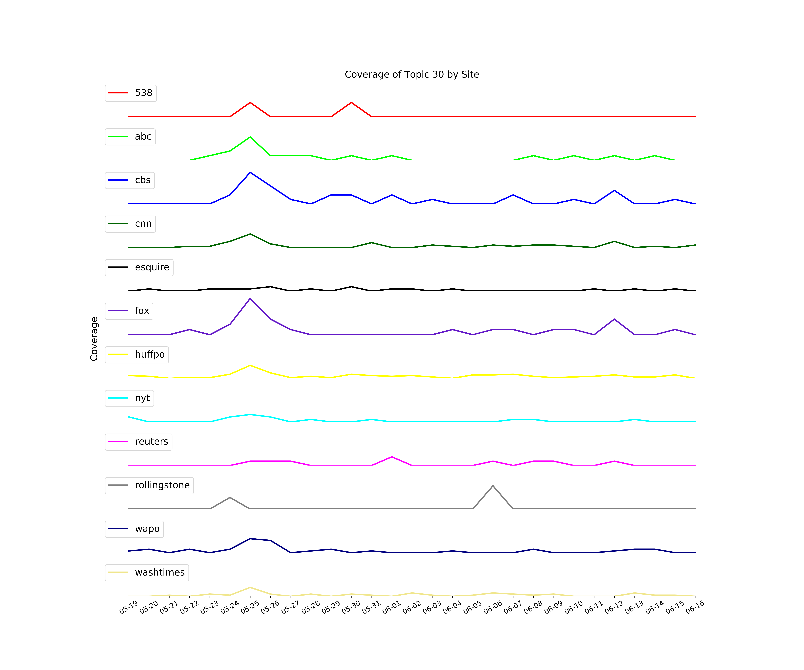
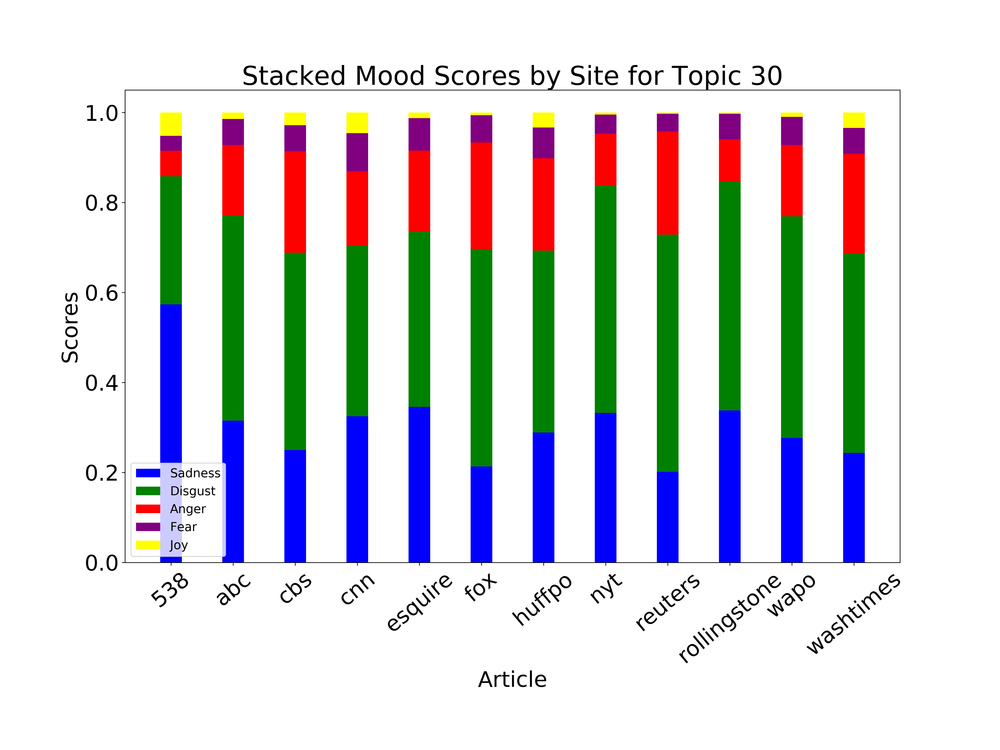
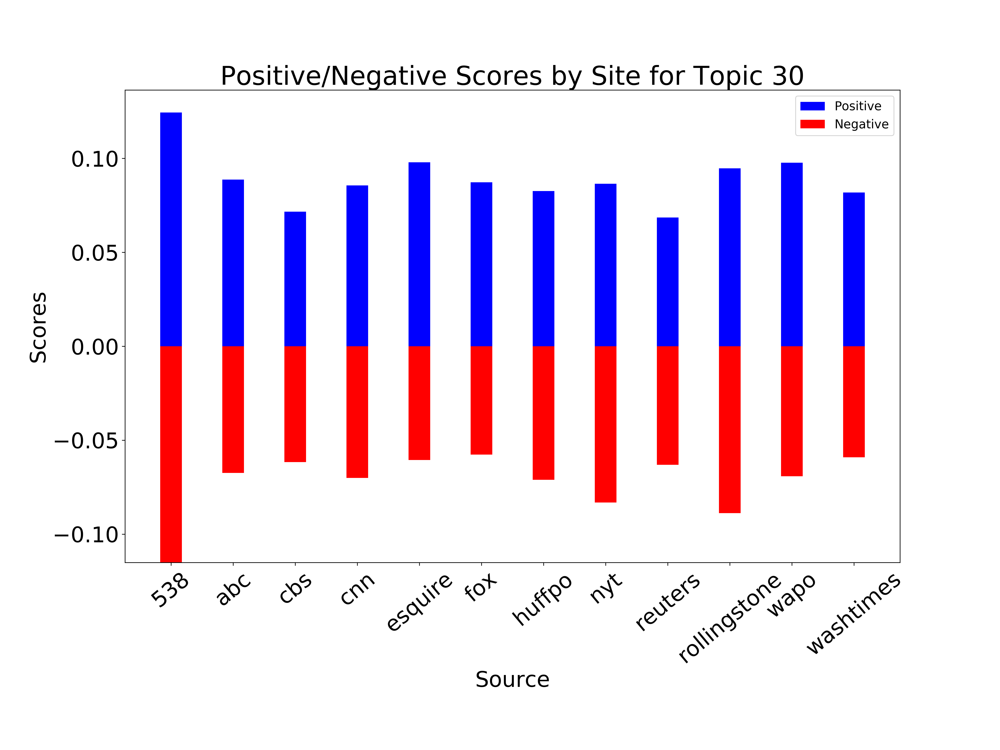

This Home Page is dedicated to helping you understand how this website works. I pick 1 out of 55 political topics discussed over the course of a month and present tools you can use to better understand the topic and how it is covered. After going through the example, I encourage you to select another topic that interests you and explore its page.
The aim of this project was to provide users with tools to examine political news and the outlets that write it. In a political climate growing ever more divided I think it is important for people to have the tools to compare news articles and organizations. I have developed tools that allow a user to compare news sites by their mood, sentiment, and objectivity toward certain topics. A user can pick an analytical piece, opinionated piece, neither or both on a certain topic to read. This allows one to be informed about the political topics in the news, how they are covered and in what way by different outlets. The hope is that a user can view all sides of an issue and come to a conclusion on their own about how they feel towards it.
Below is the same graph you will see when you click the "Topic Selector" tab above. The left side of the graph is a visualization of the topics that have been determines using Latent Dirichlet Allocation (LDA). The right side shows you the top 20 words associated with the topic you have selected. To learn more about this please go to the "Topic Selector" page. Below the graph is a table of my personal labels for the topics I felt I could reasonably discern. These are simply recommendations for what I believe the topic is discussing and I encourage you to decide that for yourself.
{{ pyLDAvis_html | safe }}From now on I will be using Topic 30 as an example of the analysis I have made for every topic. I chose this topic because I believe it illustrates what I have tried to accomplish with this project very well and because I do not think anyone would dispute the topic description I have provided since this topic is very specific.
On May 24, 2017, the day before the U.S. House special election, Ben Jacobs, a political reporter for The Guardian newspaper who was covering the election, said that Gianforte assaulted him. Jacobs said that Gianforte "bodyslammed" him to the floor and broke the reporter's glasses. The Gianforte campaign was initially unapologetic, blaming the reporter, disputing the allegations, saying that Jacobs grabbed Gianforte's wrist, causing them both to fall to the ground. However, an audio recording of the incident appeared to support Jacobs's statement, and other reporters who were present at the scene corroborated Jacobs' version of events.
According to Fox News reporter Alicia Acuna, who witnessed the incident, "Gianforte grabbed Jacobs by the neck with both hands and slammed him into the ground," then "began punching the man" and "yelling something to the effect of 'I'm sick and tired of this!'"; Acuna added that Jacobs was not showing "physical aggression" prior to the altercation. Following the incident, Jacobs went to the hospital for x-rays.
Gianforte was cited for misdemeanor assault by the Gallatin County Sheriff and has been ordered to appear in court regarding his actions. Three of Montana's largest newspapers, including the Billings Gazette, the largest in the state, the Missoulian and the Independent Record, all rescinded their endorsements of Gianforte in the wake of the incident. Speaker Paul Ryan and other members of Congress urged Gianforte to apologize for his assault.
Gianforte won the special election on May 25. During Gianforte's acceptance speech that evening, he apologized to Jacobs and the Fox News crew for his assault. On June 7 Gianforte made a written apology to Jacobs and donated $50,000 to the Committee to Protect Journalists, in return, Jacobs agreed to not pursue a civil claim against Gianforte.
On June 12, 2017, Gianforte pleaded guilty and was originally sentenced to four days in jail, to be completed in part through a work program. But because Gianforte was guilty of an assault charge, he was ineligible for the work program. The judge then switched the sentence to 40 hours of community service, 20 hours of anger management, 180-day deferred sentence, and a $300 fine along with an $85 court fee.
First, I will go over the coverage of this topic by news source. As stated in the summary, Gianforte assulted the reporter on May 24th and plead guilty to the assult on June 12. Below is a plot of the coverage of this topic by news site. As you can see there is a rise in coverage starting on May 23rd (the day the incident occured), peaking on May 24th (the day of the House special election), and a second peak on June 12th (the day of Gianforte's sentencing). Some sites had more coverage than others, such as Fox having the most, which may be due to a Fox reporter witnessing the incident.
The average mood per article for this topic was disgust, with a probability of 47.7%. This mood was found from the IBM Watson Tone Analyzer. As well as determining the analytical score used above, it also determines emotional tones. These emotional tones are Anger, Fear, Disgust, Sadness and Joy (and their corresponding colors in the graph: Red, Purple, Green, Blue and Yellow). These tones are based on the theory of research pscholinguistics, a field of research that explores the relationship between linguistic behavior and psychological theories.
The plot below is a stacked bar chart of all mood scores per article for this topic. The scores were sorted for a better representation.
Below is a bar chart of the positive score (blue) for each article going up and the negative score (red) going down. These scores were found by summing the positive together and summing the negative scores together for each sentiment word in an article for this topic. The sentiment words were determined while preprocessing the data and that process is discussed further at my github.
The plot below is interactive. At the top left, you can switch between the "By Article" and "By Site" tabs. At the top left is the toolbar. Toggle these buttons on and off by clicking them. The buttons from left to right are: Pan, Wheel Zoom, Tap, and Hover. All are automatically set on except Wheel Zoom. Pan allows you to move the graph around by clicking and moving you mouse. Wheel Zoom allows you to zoom in and out using the wheel on your mouse. Tap allows you to open the articles url by clicking on it. Lastly, Hover shows you atributes about each article when you hover over it. To the right of the graph you will see a Slider and a Checkbox Group. The slider allows you to change the probability threshold each article must have in relation to this topic. Each article has a certain probability of being in each topic you saw on the Topic Choice page. The probability of each article being in this topic is visualized by the size of each articles bubble. You will see as you move the Topic Probability slider closer to 1, the smaller bubbles will disappear. The checkbox allows you to select which site's articles you would like to view. As you unselect site's their article bubble's will disappear. Clicking the site's checkbox again will make the site's bubbles reappear. The two tabs have the same interactivity except that the "By Site" tab does not have a slider and checkbox group.
Here you can input an article from any source and you will get an analysis about it. The article's focus must be on American political news and have been created no earlier than 5/18/2017. The analysis will not be meaningful on an article outside of these limitations.